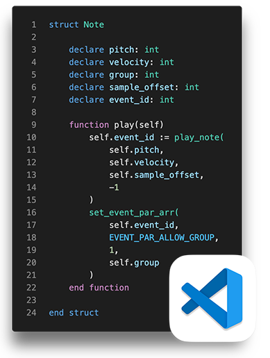

CKSP Tools

To make working with cksp easier and more efficient, I have developed an extension for Visual Studio Code. This extension provides various IDE features designed to streamline development with cksp, as well as Kontakt scripts in general. It comes bundled with the compiler, makes managing different versions simple, and provides output and filtering of KSP messages directly within the editor.
-
How to Install
The extension can be downloaded from the Microsoft Marketplace directly within Visual Studio Code by searching for
"CKSP Tools"in the Extensions view. Alternatively, it can be installed manually by downloading the.vsixfile from the Releases section of the publiccksp-tools-issuesrepository. Installation Instructions
Language and Editor Features
The main features entail the language support for .cksp and .ksp files. This is still work in progress, but the features already implemented include:
-
Syntax Highlighting
Supports constructs from both
ckspand vanilla KSP syntax, providing rich token coloring and improved readability. -
Signature Help
Shows function signatures and expected arguments in real time while typing or hovering over function calls.
-
Hover Provider
Displays documentation for built-in constants, commands, and your own function definitions directly inside the editor.
-
Definition Provider
Jump directly to function, macro, or define definitions with Cmd+Left Button or the context menu.
-
Reference Provider
Find all references to a function or macro from its definition, enabling fast code tracing and refactoring.
-
Document Symbols
Navigate within a file using document symbols (e.g. functions, variables, macros or defines) via Cmd+Shift+O or the Outline panel.
-
Workspace Symbols
Search for symbols across your entire workspace using Cmd+T for instant project-wide lookup.
-
Completion Provider
Offers name completions for variables, functions, macros, defines and KSP built-in commands or constants in real-time.

Compiler Integration
The CKSP Tools extension comes bundled with the cksp compiler, allowing you to compile your scripts directly from within Visual Studio Code.
Moreover, the extension allows you to download and manage multiple versions of the cksp compiler, enabling you to switch between different versions as needed.
-
Compiling
Press Cmd+R to compile the currently open file. You can also select a main file in your workspace to compile with Cmd+Shift+R.
-
Compiler Management
Browse, download, and manage different compiler versions directly in the sidebar (via the Kontakt logo). The extension automatically notifies you when a new version is available.
Compiler Management
The CKSP Release Panel offers an overview of all available versions of the cksp compiler. Here, you can download, delete or reinstall specific versions locally, manage pre-release versions and read through the changelogs.
You can open the panel by following these steps:
-
Click on the Kontakt logo in the sidebar (usually on the left side of the VS Code window). The CKSP Settings panel will open, where you can adjust your main file that will be used for compilation, as well as your current compiler version.
-
Click on the icon to the right of the Compiler Version dropdown. This will open the CKSP Release Panel, where you can see all available versions of the
ckspcompiler.
Alpha Versions
By default, pre-release (alpha) versions are hidden. However, they get released more frequently and may include new features and hot fixes that are not yet available in the stable releases. You can enable the display of alpha versions and their changelogs by toggling the Show Pre-Releases option at the top of the panel. Once activated, the extension will remember your preference and automatically notify you of new alpha releases in the future.
Kontakt Integration
VS Code also provides the option to launch Kontakt and read its output directly from the editor, eliminating the need to switch between applications. With CKSP Tools, you can open Kontakt directly from the sidebar, where the extension automatically detects the latest version or allows you to select a specific one in the settings. The dedicated window for Kontakt’s log output makes it easier to debug, filter, and monitor your scripts, offering keyword and type-based filtering without relying on Creator Tools. Additionally, when executing scripts through the Lua API, the output is displayed in the separate Kontakt Lua console within the bottom panel of VS Code.